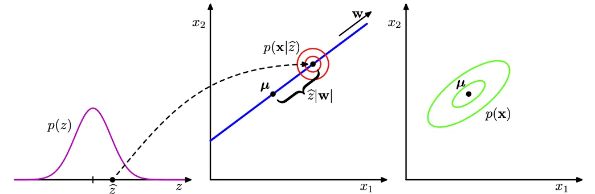
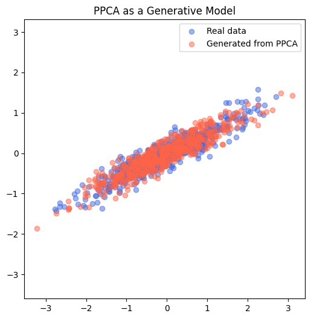

PPCA: Probabilistic Principal Component Analysis
PCA is one of those algorithms you learn early and then treat as a black box: center the data, compute the top eigenvectors of the sample covariance, project. But PCA feels algebraic, where does it come from probabilistically? Probabilistic PCA (PPCA) answers that question: it is the maximum-likelihood solution of a simple linear Gaussian latent-variable model. Understanding PPCA is a tiny, high-value step on the path to modern generative models (VAEs, normalizing flows): it isolates the linear + Gaussian case where every calculation is analytic, so you can see clearly how inference and likelihood tie together.
Below I present a single self-contained story: model → marginal → posterior → likelihood → MLE solution → interpretation. I’ll highlight the key identities you need and keep the algebra explicit so nothing mysterious is swept under the rug.
Motivation
We want a generative model for $d$-dimensional observations $t$ that:
- Is simple enough to solve analytically; and
- Reduces to classical PCA in an appropriate limit.
A latent-variable model does exactly this: introduce a low-dimensional latent $x\in\mathbb{R}^q$ ($q Assume the generative process
where $W$ is a $d\times q$ matrix (the linear mapping), $\mu\in\mathbb{R}^d$ is the mean, and $\sigma^2>0$ is isotropic noise variance. This is the PPCA model (Tipping & Bishop, 1999). Two immediate facts: For the sake of clarity I’ll use the explanation of Oliver:  We compute the marginal by integrating out $x$:
Set $r := t-\mu$. Using the Gaussian forms,
Collect the quadratic terms in $x$: Define the $q\times q$ matrix
Completing the square in $x$ gives a Gaussian integral whose value is $(2\pi)^{q/2} |M|^{-1/2}$. Carefully tracking normalization constants (from $p(x)$ and $p(t\mid x)$) yields
Now recognize the familiar covariance and precision using two matrix identities. For $C := W W^\top + \sigma^2 I_d$,
This matches the precision we found in the exponent.
Therefore $(\sigma^2)^{d/2}|M|^{1/2}=|C|^{1/2}$. Putting the pieces together,
So PPCA is a Gaussian density with covariance equal to the low-rank part $W W^\top$ plus isotropic noise. From the quadratic completion above one also reads the posterior over $x$:
with
(Equivalently, define $M := I_q + \sigma^{-2}W^\top W$ and you get $\Sigma=M^{-1}$ and $m = M^{-1}\sigma^{-2}W^\top (t-\mu)$; both forms are algebraically the same.) Two intuitions: Given $N$ i.i.d. datapoints $\lbrace t_i\rbrace_{i=1}^N$, the log-likelihood is
where $S$ is the sample covariance For fixed $\mu$ (choose $\mu=\bar t$), maximizing the likelihood reduces to minimizing
Tipping & Bishop show that the stationary point can be written in closed form using the top eigenstructure of $S$. Let the eigen-decomposition be
Split $U = [U_q\ U_{d-q}]$ and $\Lambda = \operatorname{diag}(\Lambda_q,\Lambda_{d-q})$ where $U_q$ are the top $q$ eigenvectors and $\Lambda_q$ the corresponding eigenvalues. Then the maximum-likelihood estimates are A few remarks: If you want to compute the MLE in practice: EM treats $x$ as missing data. With current parameters $(W,\sigma^2)$ compute posterior expectations
Then M-step updates $W$ and $\sigma^2$ by solving linear equations involving these expectations (closed form). EM is useful when you want a monotonic increase in likelihood or when you want to generalize (e.g. to non-isotropic noise $\Psi$) where closed forms are less tidy. Sampling from PPCA is trivial and instructive: This generates samples from $\mathcal{N}(\mu, W W^\top + \sigma^2 I_d)$. So PPCA is not a complex high-capacity generative model, but it provides a clear probabilistic story for projection + reconstruction and clarifies the role of latent dimensions and noise.  A Variational Autoencoder (VAE) generalizes PPCA in two directions: PPCA is therefore the canonical linear Gaussian toy model where inference, sampling, and MLE are closed form. Studying PPCA first gives you a clean map of what changes when you make the model nonlinear and inference approximate. [1] M. E. Tipping and C. M. Bishop, “Probabilistic Principal Component Analysis,” Journal of the Royal Statistical Society: Series B (Statistical Methodology) 61, 611-622 (1999), https://www.cs.columbia.edu/~blei/seminar/2020-representation/readings/TippingBishop1999.pdf [2] S. Patel, “The Simplest Generative Model You Probably Missed,” Medium (2018), https://medium.com/practical-coding/the-simplest-generative-model-you-probably-missed-c840d68b704 [3] S. J. D. Prince, Understanding Deep Learning (MIT Press, 2023), https://udlbook.github.io/udlbook/
Model (linear Gaussian latent variable)
Marginal distribution $p(t)$
Woodbury identity (precision)
Matrix determinant lemma
$$
|W W^\top + \sigma^2 I_d| = (\sigma^2)^d\,\Big|I_q + \frac{1}{\sigma^2}W^\top W\Big| = (\sigma^2)^d |M|.
$$
Posterior $p(x\mid t)$ (exact inference)
Likelihood for a dataset and maximum likelihood estimation
EM algorithm
PPCA vs Factor Analysis vs PCA
Sampling & use as a generative model
Code and visuals
import numpy as np
import matplotlib.pyplot as plt
from numpy.linalg import eigh
# -------------------------------------
# Step 1. Generate some real 2D data
# -------------------------------------
np.random.seed(0)
N = 500
z = np.random.randn(N, 1)
T_real = np.hstack([z, 0.5*z + 0.2*np.random.randn(N, 1)]) # correlated data
# -------------------------------------
# Step 2. Estimate PPCA parameters
# -------------------------------------
# Center data
mu = T_real.mean(axis=0)
X_centered = T_real - mu
# Sample covariance
S = np.cov(X_centered.T)
# Eigen decomposition
vals, vecs = eigh(S)
idx = np.argsort(vals)[::-1]
vals, vecs = vals[idx], vecs[:, idx]
# Latent dimension q = 1
q = 1
U_q = vecs[:, :q]
Lambda_q = vals[:q]
# Compute sigma^2 and W
D = T_real.shape[1]
sigma2 = np.mean(vals[q:]) # average of remaining eigenvalues
W = U_q * np.sqrt(Lambda_q - sigma2)
print(f"Learned W =\n{W}")
print(f"Learned sigma^2 = {sigma2:.4f}")
print(f"Mean = {mu}")
# -------------------------------------
# Step 3. Generate new data from model
# -------------------------------------
N_gen = 500
x_gen = np.random.randn(N_gen, q)
eps = np.sqrt(sigma2) * np.random.randn(N_gen, D)
T_gen = x_gen @ W.T + mu + eps
# -------------------------------------
# Step 4. Compare
# -------------------------------------
plt.figure(figsize=(6,6))
plt.scatter(T_real[:,0], T_real[:,1], alpha=0.5, label="Real data", color="royalblue")
plt.scatter(T_gen[:,0], T_gen[:,1], alpha=0.5, label="Generated from PPCA", color="tomato")
plt.title("PPCA as a Generative Model")
plt.legend()
plt.axis("equal")
plt.show()
Intuition & how to read the equations
Bridge to VAEs (why study PPCA first)
References